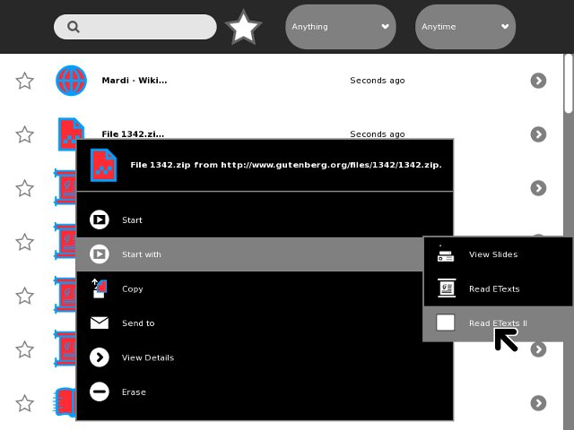
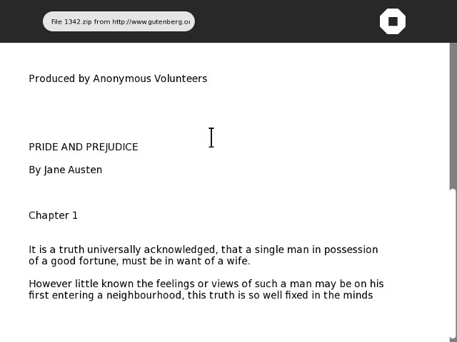

Package The Activity
Add setup.py
You'll need to add a Python program called setup.py to the same directory that you Activity program is in. Every setup.py is exactly the same as every other setup.py. The copies in our Git repository look like this:
#!/usr/bin/env python # Copyright (C) 2006, Red Hat, Inc. # # This program is free software; you can redistribute it and/or modify # it under the terms of the GNU General Public License as published by # the Free Software Foundation; either version 2 of the License, or # (at your option) any later version. # # This program is distributed in the hope that it will be useful, # but WITHOUT ANY WARRANTY; without even the implied warranty of # MERCHANTABILITY or FITNESS FOR A PARTICULAR PURPOSE. See the # GNU General Public License for more details. # # You should have received a copy of the GNU General Public License # along with this program; if not, write to the Free Software # Foundation, Inc., 51 Franklin St, Fifth Floor, Boston, MA 02110-1301 USA from sugar.activity import bundlebuilder bundlebuilder.start()
Be sure and copy the entire text above, including the comments.
The setup.py program is used by sugar for a number of purposes. If you run setup.py from the command line you'll see the options that are used with it and what they do.
[jim@simmons bookexamples]$ ./setup.py /usr/lib/python2.6/site-packages/sugar/util.py:25: DeprecationWarning: the sha module is deprecated; use the hashlib module instead import sha Available commands: build Build generated files dev Setup for development dist_xo Create a xo bundle package dist_source Create a tar source package fix_manifest Add missing files to the manifest genpot Generate the gettext pot file install Install the activity in the system (Type "./setup.py <command> --help" for help about a particular command's options.
We'll be running some of these commands later on. Don't be concerned about the DeprecationWarning message. That is just Python's way of telling us that it has a new way of doing something that is better but the old way we are using still works. The error is coming from code in Sugar itself and should be fixed in some future Sugar release.
Create activity.info
Next create a directory within the one your progam is in and name it activity. Create a file named activity.info within that directory and enter the lines below into it. Here is the one for our first Activity:
[Activity] name = Read ETexts II service_name = net.flossmanuals.ReadEtextsActivity icon = read-etexts exec = sugar-activity ReadEtextsActivity.ReadEtextsActivity show_launcher = no activity_version = 1 mime_types = text/plain;application/zip license = GPLv2+
This file tells Sugar how to run your Activity. The properties needed in this file are:
| name | The name of your Activity as it will appear to the user.
|
| service_name | A unique name that Sugar will use to refer to your Activity. Any Journal entry created by your Activity will have this name stored in its metadata, so that when someone resumes the Journal entry Sugar knows to use the program that created it to read it.
|
| icon
|
The name of the icon file you have created for the Activity. Since icons are always .svg files the icon file in the example is named read-etexts.svg.
|
| exec | This tells Sugar how to launch your Activity. What it says is to create an instance of the class ReadEtextsActivity which it will find in file ReadEtextsActivity.py.
|
| show_launcher | There are two ways to launch an Activity. The first is to click on the icon in the Activity view. The second is to resume an entry in the Journal. Activities that don't create Journal entries can only be resumed from the Journal, so there is no point in putting an icon in the Activity ring for them. Read Etexts is an Activity like that.
|
| activity_version | An integer that represents the version number of your program. ⁞ The first version is 1, the next is 2, and so on.
|
| mime_types | Generally when you resume a Journal entry it launches the Activity that created it. In the case of an e-book it wasn't created by any Activity, so we need another way to tell the Journal which Activity it can use. A MIME type is the name of a common file format. Some examples are text/plain, text/html, application/zip and application/pdf. In this entry we're telling the Journal that our program can handle either plain text files or Zip archive files.
|
| license | Owning a computer program is not like buying a car. With a car, you're the owner and you can do what you like with it. You can sell it, rent it out, make it into a hot rod, whatever. With a computer program there is always a license that tells the person receiving the program what he is allowed to do with it. GPLv2+ is a popular standard license that can be used for Activities, and since this is my program that is what goes here. When you're ready to distribute one of your Activities I'll have more to say about licenses.
|
Create An Icon
Next we need to create an icon named read-etexts.svg and put it in the activity subdirectory. We're going to use Inkscape to create the icon. From the New menu in Inkscape select icon_48x48. This will create a drawing area that is a good size.
You don't need to be an expert in Inkscape to create an icon. In fact the less fancy your icon is the better. When drawing your icon remember the following points:
- Your icon needs to look good in sizes ranging from really, really small to large.
- It needs to be recognizeable when its really, really small.
- You only get to use two colors: a stroke color and a fill color. It doesn't matter which ones you choose because Sugar will need to override your choices anyway, so just use black strokes on a white background.
- A fill color is only applied to an area that is contained within an unbroken stroke. If you draw a box and one of the corners doesn't quite connect the area inside that box will not be filled. Free hand drawing is only for the talented. Circles, boxes, and arcs are easy to draw with Inkscape so use them when you can.
- Inkscape will also draw 3D boxes using two point perspective. Don't use them. Icons should be flat images. 3D just doesn't look good in an icon.
- Coming up with good ideas for icons is tough. I once came up with a rather nice picture of a library card catalog drawer for Get Internet Archive Books. The problem is, no child under the age of forty has ever seen a card catalog and fewer still understand its purpose.
When you're done making your icon you need to modify it so it can work with Sugar. Specifically, you need to make it show Sugar can use its own choice of stroke color and fill color. The SVG file format is based on XML, which means it is a text file with some special tags in it. This means that once we have finished editing it in Inkscape we can load the file into Eric and edit it as a text file.
I'm not going to put the entire file in this chapter because most of it you'll just leave alone. The first part you need to modify is at the very beginning.
Before:
<?xml version="1.0" encoding="UTF-8" standalone="no"?> <!-- Created with Inkscape (http://www.inkscape.org/) --> <svg
After:
<?xml version="1.0" ?><!DOCTYPE svg PUBLIC '-//W3C//DTD SVG 1.1//EN' 'http://www.w3.org/Graphics/SVG/1.1/DTD/svg11.dtd' [ <!ENTITY stroke_color "#000000"> <!ENTITY fill_color "#FFFFFF"> ]><svg
Now in the body of the document you'll find references to fill and stroke as part of an attribute called style. Every line or shape you draw will have these, like this:
<rect
style="fill:#ffffff;stroke:#000000;stroke-opacity:1"
id="rect904"
width="36.142857"
height="32.142857"
x="4.1428571"
y="7.1428571" />
You need to change each one to look like this:
<rect
style="fill:&fill_color;;stroke:&stroke_color;;stroke-opacity:1"
id="rect904"
width="36.142857"
height="32.142857"
x="4.1428571"
y="7.1428571" />
Note that &stroke_color; and &fill_color; both end with semicolons (;), and semicolons are also used to separate the properties for style. Because of this it is an extremely common beginner's mistake to leave off the trailing semicolon because two semicolons in a row don't look right. Be assured that the two semicolons in a row are intentional and absolutely necessary!
Make a MANIFEST File
You should remember that setup.py has an option to update a manifest. Let's try it:
./setup.py fix_manifest /usr/lib/python2.6/site-packages/sugar/util.py:25: DeprecationWarning: the sha module is deprecated; use the hashlib module instead import sha WARNING:root:Missing po/ dir, cannot build_locale WARNING:root:Activity directory lacks a MANIFEST file.
This actually will build a MANIFEST file containing everything in the directory and its subdirectories. The /po directory it is complaining about is used to translate Activities into different languages. We can ignore that for now.
The MANIFEST file it creates will contain some extra stuff, so we need to get rid of the extra lines using Eric. The corrected MANIFEST should look like this:
setup.py ReadEtextsActivity.py activity/read-etexts.svg activity/activity.info
Install The Activity
There's just one more thing to do before we can test our Activity under the Sugar emulator. We need to install it, which in this case means making a symbolic link between the directory we're using for our code in the ~/Activities/ directory. The symbol ~ refers to the "home" directory of the user we're running Sugar under, and a symbolic link is a way to make a file or directory appear to be located in more than one place without copying it. We make this symbolic link by running setup.py again:
./setup.py dev
Running Our Activity
Now at last we can run our Activity under Sugar. To do that we need to learn how to run sugar-emulator.
Fedora doesn't make a menu option for Sugar Emulator, but it's easy to add one yourself. The command to run is simply
sugar-emulator
If your screen resolution is smaller than the default size sugar-emulator runs at it will run full screen. This is not convenient for testing, so you may want to specify your own size:
sugar-emulator -i 800x600
Note that this option only exists in Fedora 11 and later.
When you run sugar-emulator a window opens up and the Sugar environment starts up and runs inside it. It looks like this:

When running sugar-emulator you may find that some keys don't seem to work in the Sugar environment. This is caused by bugs in the Xephyr software that creates the window that Sugar runs in. Sometimes it has difficulty identifying your keyboard and as a result some keys get misinterpreted. On Fedora 11 I noticed that my function keys did not work, and my regular arrow keys didn't work either although my keypad arrow keys did. I was able to get my function keys working again by putting this line in ~/.sugar/debug:
run setxkbmap <keymap name>
This needs more explanation. First, the symbol "~" refers to your home directory. Second, any file named starting with a period is considered hidden in Linux, so you'll need to use the option to show hidden files and directories in the GNOME directory browser to navigate to it. Finally, the keymap name is a two character country code: us for the United States, fr for France, de for Germany, etc.
To test our Activity we're going to need to have a book in the Journal, so use the Browse Activity to visit Project Gutenberg again and download the book of your choice. This time it's important to download the book in Zip format, because Browse cannot download a plain text file to the Journal. Instead, it opens the file for viewing as if it was a web page. If you try the same thing with the Zip file it will create an entry in the Journal.
We can't just open the file with one click in the Journal because our program did not create the Journal entry and there are several Activities that support the MIME type of the Journal entry. We need to use the Start With menu option like this:

When we do open the Journal entry this is what we see:

Technically, this is the first iteration of our Activity. (Iteration is a vastly useful word meaning something you do more than once. In this book we're building our Activity a bit at a time so I can demonstrate Activity writing principles, but actually building a program in pieces, testing it, getting feedback, and building a bit more can be a highly productive way of creating software. Using the word iteration to describe each step in the process makes the process sound more formal than it really is).
While this Activity might be good enough to show your own mother, we really should improve it a bit before we do that. That part comes next.
Author : PackageTheActivity
© James Simmons 2009, 2010
Modifications:
Lachlan Musicman 2010
License : General Public License
Produced in FLOSS Manuals (http://www.flossmanuals.net)